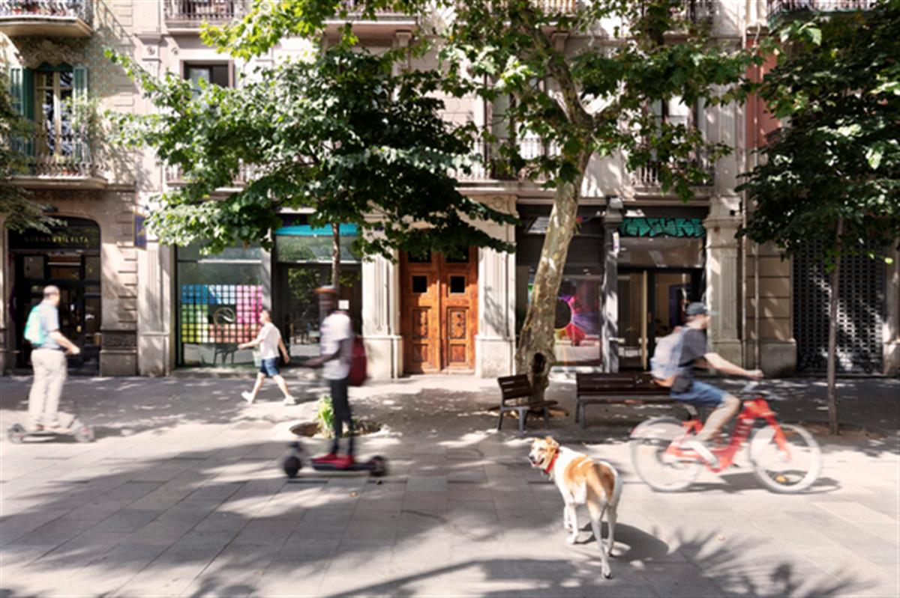
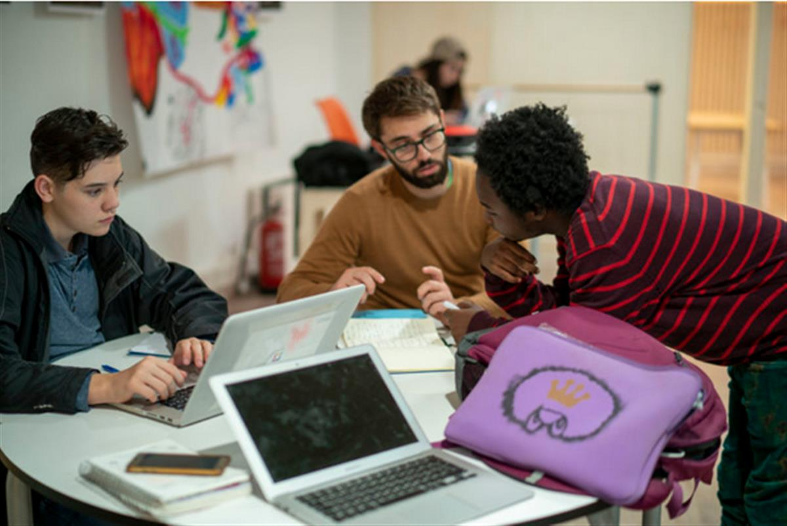
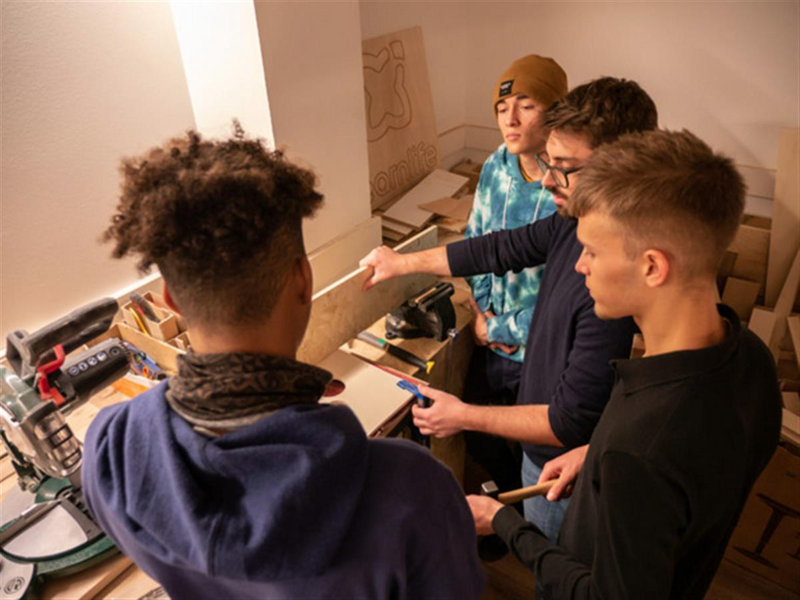
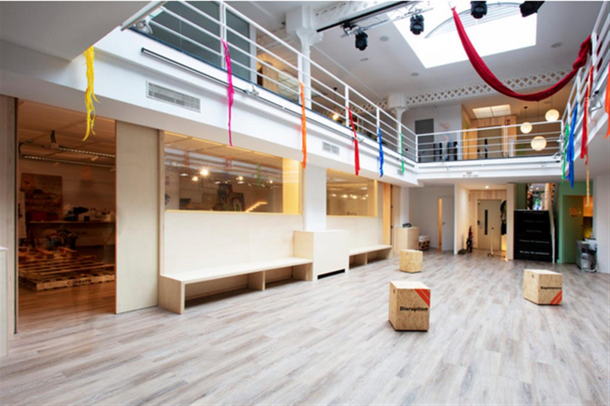

LEARNLIFE
Catalonia (Barcelona)
Maths. History. Science. Exams. Tests. Most schools focus on the acquisition of knowledge, facts and traditional disciplines. But, united by optimism, one adventurous group of innovators has recognised that a new way of learning is needed in today’s increasingly unpredictable world. To stay ahead – and thrive in the 21st century – we need to be as human as possible.
Christopher Pommerening, Dr. Stephen Harris and Blair MacLaren all believe that it’s time for schools to move away from what was once thought of as “school’ – because it’s collaborative learning communities that will be the true driver behind positive societal change. That’s why, in 2017, they founded Learnlife.

“I have been in education for more than 40 years and a school leader for 30 years,” Stephen, Learnlife’s Co-founder and Chief Learning Officer, tells us. ”I have taken the opportunity at this point in my career to join with like-minded people from different spheres of life to build the global momentum for change.”
Meanwhile, Christopher came from the perspective of a parent earnestly looking into the educational options for his young family. Together with his wife, Daniela, they saw the mismatch from a social entrepreneurship perspective and took steps to link with others from education and entrepreneurial backgrounds, to initiate a project where the vision for what learning could be might serve as a catalyst for profound and sustained educational change.

The partners have created an open ecosystem that’s a hybrid of a digital platform and physical hubs of innovative educators and change leaders from all around the world. This ‘breakthrough learning community’ teaches sought after life skills in a hands-on and interactive way – always placing wellbeing and social justice at the heart of the community.
Stephen explains. “For too long educational change has been the domain of government and big business with very little to show for it. Learnlife is choosing to sidestep this and directly unite the efforts, purpose and mission of educators and entrepreneurship.”
This is not a new model for learning, like the reality-focused Montessori and playful Steiner schools, because Learnlife does not operate schools. Instead, creative and problem-solving ‘Learnlife Hubs’ are supported by a wider ‘Alliance’ of over 300 global thought leaders in 50 countries – like psychologist Alfredo Hernando, designer Rosan Bosch, chef Ferran Adrià and educator David Price.
“Learnlife is the canary in the coal mine for how schools of the future could be – schools started by entrepreneurs, who have had kids and looked around at schools and thought ‘that’s not how school should be’.” – David Price
“The traditional system, with its focus on standardisation, examinations and delivering content, bears little relevance to the emerging workplaces,” adds Stephen. “Learnlife is about demonstrating that it is possible to change the attitudes towards and models of learning in profound and engaging ways. The innovation at Leanlife has more to do with thriving as people, more so than seeing technology as being the driver for change.”
Stephen believes people need to be aware that the ‘shelf life’ of the traditional education systems has well and truly passed. Now we need to prepare new generations for the world and cultures in which they already live.

“The short electoral cycles of governments, matched with a complex world means that lasting change in the world of learning is not going to occur as something introduced by politicians or bureaucracy,” he says. “The movement has to be grassroots and it is Learnlife’s mission to be both a catalyst within this movement for change. United we will initiate change for good, divided the status quo in schooling will grind to a painful slow death, We have the opportunity to shape the future of learning – and Learnlife endeavours to be a community with an optimistic picture of what learning could be and the ability to show it in practice.”
The COVID-19 pandemic has created the largest disruption of education systems in history, so it’s time to embrace the momentum and make change happen. As thousands of students return to classrooms, there is even more importance of wellbeing, learning environments and space design.

There are now three physical Hubs in action – the Urban Hub (Barcelona) for teenagers; the Nature Hub (in outer Barcelona) for younger children and, inspired by the needs made evident with the pandemic, the Learnlife Remote Hub, which is accessible by anyone, anywhere and anytime. There are also more than 30 groups around the world who are currently working out their own versions of the ‘Learnlife paradigm’, contextualised for their specific communities.
“The purpose of the project is to create a learning community where all members, whether they be young or older lifelong learners, experience a joy in learning that will endure into their futures. It is about igniting curiosity for everything positive that the world offers and preparing collaborative teams to tackle the world’s big problems. It is a joy working alongside so many like-minded and passionate people in the project – and that they come from all corners of the globe.”
Learnlife’s ambition is to empower 100,000,000 learners, 5,000,000 educators, 100,000 schools and 2,000 learning hubs by 2030. The days of tinkering around the edges of schooling systems is over.
Open on original site ↗AtlasAction: Create your own version of a hub anywhere in the world, join the Alliance to become the change leaders within your own communities and registre for the [RE]LEARN online festival and events.
Read more ► Learnlife was mapped by David Price in his AtlasChart Top 5 – a journey through five schools doing things differently from Cambodia to Catalonia.
Submitted by David Price
Written by Lisa Goldapple, Editor-in-Chief, Atlas of the Future (09 October 2020)
SOURCE: ATLAS OF THE FUTURE